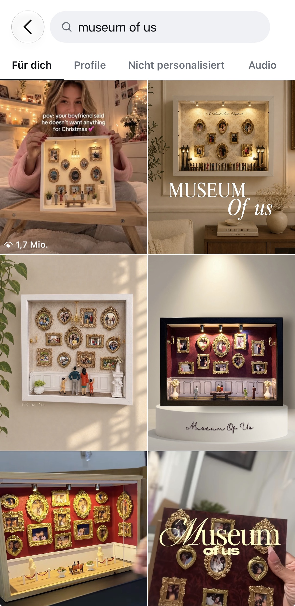
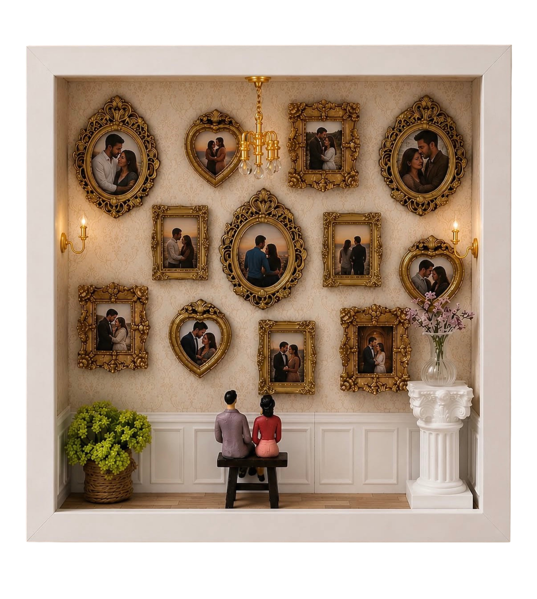

Eintritt frei · Geöffnet für alle Neugierigen
Willkommen im
Museum of Us
Sehr geehrte Besucherinnen und Besucher, wir freuen uns, Sie auf unserer Seite willkommen zu heißen. Nehmen Sie sich Zeit und lassen Sie sich von den Exponaten unserer Sammlung führen.

Inspiriert wurden wir zu diesem Projekt durch einen aktuellen Social-Media-Trend: Viele gestalten derzeit ihr eigenes Museum of Us, indem sie Erinnerungen, Geschichten und winzige Bilder in goldenen Mini-Bilderrahmen samt kleinen Figuren in einem großen Rahmen platzieren. Diese Idee haben wir auf unsere persönliche Vorstellungswebsite übertragen. Als zwei Studentinnen im ersten Semester präsentieren wir uns hier gemeinsam als Team – in Form eines digitalen Museums. Denn jeder Mensch besteht aus einer einzigartigen Sammlung an Erfahrungen, Interessen und Fähigkeiten, die es verdient, wie ein Kunstwerk betrachtet zu werden. Jede von uns hat deshalb ihre eigene Ausstellung, durch die Sie ganz in Ihrem eigenen Tempo gehen können.

Highlights der Sammlung
Ein erster Blick auf drei besondere Exponate.
Exponat 1 von 3
Ihr Museumsführer
Alles Wissenswerte für Ihren Rundgang.